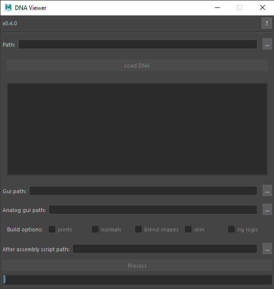

Usage in Maya
There is also a Maya UI Window which can be used for creating the scene with creating a functional rig in a non-programmatic manner.

During scene generation, the RigLogic4 plugin will be loaded automatically and you can expect to get the following message:

Click Allow to load the plugin. If you enable the Apply to all plugins in this location option,
Maya will not show this notification anymore.